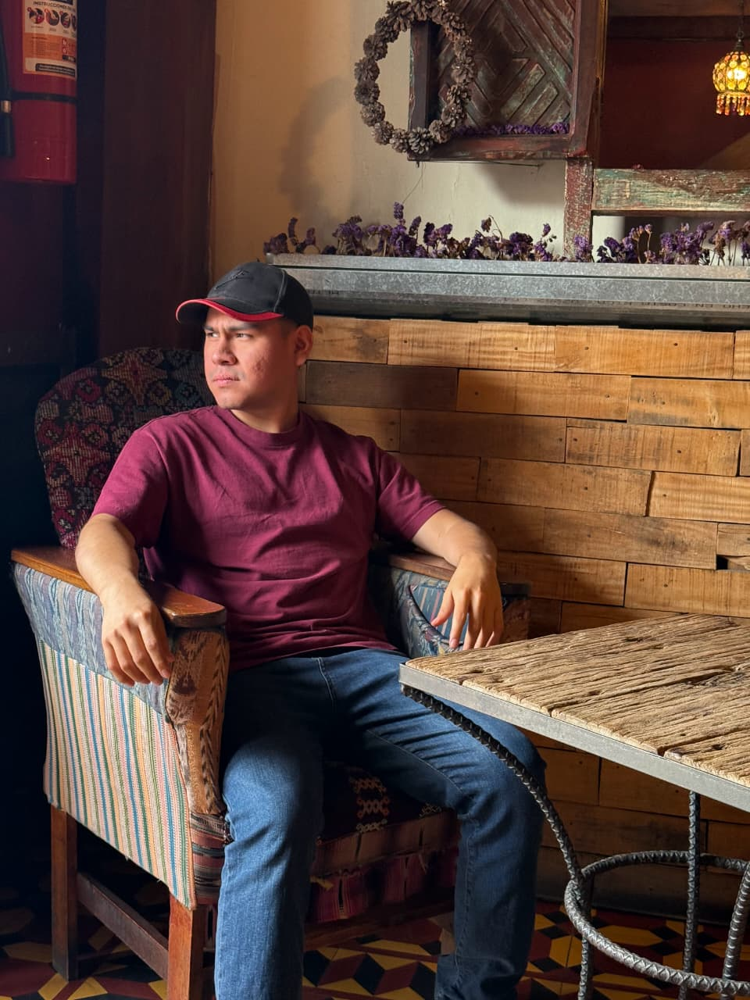

Jorge Mario Ruiz Rodas
Ingeniero en Electrónica y Diseñador Web en Quetzaltenango, Guatemala
¡Hola! Soy Jorge. Actualmente me apasiona el desarrollo web y disfruto poder ayudar a las personas a través de mis conocimientos. Me encanta aprender cosas nuevas del mundo digital y aplicar lo que sé para crear soluciones útiles.
Cuando no estoy programando, suelo dedicar mi tiempo a la edición de videos, una de mis pasiones más grandes.
Saber más acerca de míSoy un amante del deporte. En la región donde nací, el soccer es el más común, aunque también disfruto mucho del atletismo y la natación. Me considero una persona alegre, siempre con una sonrisa en el rostro y dispuesta a escuchar a los demás.
- #design
- #webdevelopment
- #videorgapher
- #GT
- #aboutme